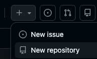

Programmering nivå 1 med Python
Kapitel 16: Versionshantering och GitHub
I detta kapitel lär du dig grunderna i versionshantering, hur du laddar upp Pythonfiler till GitHub och hur du skriver en tydlig README.
Innehållsförteckning
Klicka på ett avsnitt för att hoppa direkt.
16.1 Vad är versionshantering
När man programmerar ändras koden ofta många gånger.
Man testar nya lösningar, rättar fel och bygger vidare steg för steg.
Därför är det viktigt att kunna spara olika versioner av sitt program.
I det här kapitlet får du lära dig vad versionshantering är, hur GitHub kan användas och hur du laddar upp Pythonfiler till ett repository.
Commit-kommentarer på engelska
I den här kursen ska commit-kommentarer skrivas på engelska.
Det gör att du vänjer dig vid ett arbetssätt som är vanligt inom programmering.
Många verktyg, guider och projekt i GitHub använder engelska.
Därför är det bra att redan från början träna på att skriva tydliga kommentarer på engelska.
Exempel på bra commit-kommentarer
Create first version of the program
Add menu for user choices
Fix input error for numbers
Add function for calculating average
Improve error handling with try-exceptViktigt att tänka på
En commit-kommentar ska vara
- kort
- tydlig
- konkret
Den ska berätta vad du har ändrat.
Undvik sådana kommentarer
stuff
update
new
fixDe är för otydliga och berättar inte vad som faktiskt ändrades.
En enkel modell
Du kan skriva:
Verb + what you changed
Add menu
Fix loop condition
Create function for input
Improve print output16.2 Ladda upp Pythonfiler till GitHub
När du har skapat ett repository på GitHub kan du börja ladda upp dina Pythonfiler.
I den här kursen räcker det att du använder GitHub direkt i webbläsaren.
Du behöver alltså inte börja med terminalkommandon.
Vad du behöver
Innan du börjar behöver du
- ett GitHub-konto
- ett repository
- en eller flera Pythonfiler på datorn
Vanliga filer i den här kursen är till exempel
main.py
uppgift1.py
spel.pySkapa ett repository
Ett repository är projektets mapp på GitHub.
Så här gör du:
- Gå till GitHub
- Logga in på ditt konto
- Klicka på New eller välj Create new repository
- Skriv ett namn på projektet, till exempel python-uppgifter
- Välj om projektet ska vara Public eller Private
- Klicka på Create repository

Ladda upp en Pythonfil
När ditt repository är skapat kan du ladda upp dina filer:
- Öppna ditt repository
- Klicka på Add file
- Välj Upload files
- Dra in din py-fil eller klicka på choose your files
- Kontrollera att rätt fil har valts
- Skriv en commit-kommentar på engelska
- Klicka på Commit changes
Nu finns filen sparad på GitHub.
Exempel
Du har gjort ett program som heter main.py.
En bra commit-kommentar kan vara:
Add first version of main.pyLadda upp en ny version av samma fil
Viktigt: Ladda upp en ny version varje programmeringstillfälle, hellre en gång för mycket än en gång för lite. Minst varje dag du kodar.
Om du har ändrat filen på din dator kan du ladda upp den igen.
GitHub sparar då den nya versionen och visar att en förändring har gjorts.
Skriv alltid en ny commit-kommentar som förklarar vad du ändrat, till exempel:
Add input for user name
Fix error in while loop
Improve print outputRedigera filer direkt på GitHub
Du kan också ändra en fil direkt på GitHub, vilket passar bäst för små ändringar.
- Öppna filen i ditt repository
- Klicka på pennan för att redigera filen
- Ändra i koden
- Scrolla ner på sidan
- Skriv en commit-kommentar på engelska
- Klicka på Commit changes
Vad du ska ladda upp
I den här kursen räcker det oftast att du laddar upp
- py-filer
- eventuellt en README.md
- andra filer som hör till projektet
Det viktigaste är att din Pythonkod finns sparad i repositoryt.
Arbeta steg för steg
Det är bättre att ladda upp koden ofta än att vänta tills allt är klart.
Ett bra arbetssätt är:
- skriv en del av programmet
- testa att det fungerar
- ladda upp filen
- skriv en tydlig commit-kommentar
- fortsätt sedan med nästa del
Vanliga misstag
Vanliga misstag är att
- ladda upp fel fil
- glömma att skriva en tydlig commit-kommentar
- vänta för länge mellan uppladdningarna
- skriva över fungerande kod utan att ha sparat en tidigare version
Därför är det bra att arbeta i små steg.
16.3 README.md
I många projekt på GitHub finns en fil som heter README.md.
Det är ofta den första filen man ser när man öppnar ett repository.
README-filen används för att förklara vad projektet är och hur det fungerar.
Vad betyder README
Namnet README betyder ungefär las detta forst.
Det är alltså en fil som hjälper andra att snabbt förstå projektet.
Vad betyder .md
Filändelsen md står för Markdown.
Markdown är ett enkelt sätt att formatera text med rubriker, listor och länkar.
Varför README är viktig
En README gör projektet lättare att förstå.
Den hjälper andra att se
- vad programmet gör
- vem projektet är till för
- hur man startar programmet
- vad filerna används till
README ska skrivas på engelska
I den här kursen ska README-filen skrivas på engelska.
GitHub används ofta i internationella sammanhang, så det är bra att träna på enkel och tydlig projektinformation på engelska.
Vad kan stå i en enkel README
I Programmering 1 behöver README-filen inte vara lång eller avancerad.
Det räcker med enkel information som hjälper någon att förstå projektet, till exempel:
- project title
- short description
- how to run the program
- files in the project
- author
Exempel på innehåll
# Movie Program
This program lets the user enter the name of a movie and its length in minutes.
The program then shows the movie title and converts the time into hours and minutes.
## How to run
Run the file main.py in Python.
## Files
main.py - the main program
README.md - information about the project
## Author
PaulVad som passar i den här kursen
För elever i Programmering 1 räcker det ofta att README-filen innehåller:
- en rubrik med projektets namn
- en kort beskrivning av programmet
- hur man startar programmet
- vilka filer som finns
- författarens namn
Tips
Skriv kort och tydligt. Använd enkel engelska.
Det viktigaste är att någon annan kan förstå vad projektet handlar om.